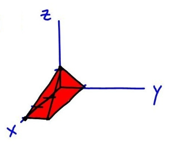
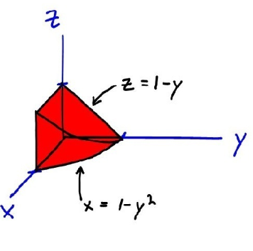

Homework Section 15.6 Answers
-
Answer 1
- -16
- `(e^4 - 1)/3`
-
Answer 2
- `3/20 (1 - cos(1))`
- `4/15`
- `5/42`
- `3pi`
-
Answer 3
- 144
- `16pi`
-
Answer 4
-
A solid in the first octant bounded by the coordinate planes (`x=0, y=0, z=0`), the plane `x + 3z = 3`, and the plane `y + z = 1`.

-
A solid in the first octant bounded by the coordinate planes (`x=0, y=0, z=0`), the parabolic cylinder `x = 1 - y^2`, and the plane `y + z = 1`.

-
-
Answer 5
- `int_0^1 int_(-sqrt(y))^(sqrt(y)) int_0^(2-2y) f(x,y,z) \ dz \ dx \ dy`
- `int_0^1 int_0^(2-2y) int_(-sqrt(y))^(sqrt(y)) f(x,y,z) \ dx \ dz \ dy`
- `int_0^2 int_0^(1-z/2) int_(-sqrt(y))^(sqrt(y)) f(x,y,z) \ dx \ dy \ dz`
- `int_0^2 int_(-sqrt(1-z/2))^(sqrt(1-z/2)) int_(x^2)^(1-z/2) f(x,y,z) \ dy \ dx \ dz`
- `int_(-1)^1 int_0^(2-2x^2) int_(x^2)^(1-z/2) f(x,y,z) \ dy \ dz \ dx`